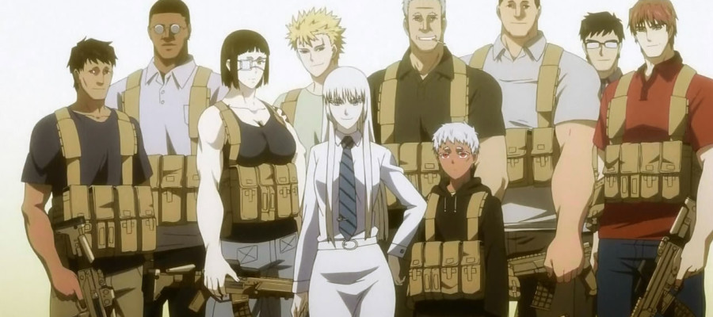

Director: Keitaro Motonaga
Production Studio: White Fox
Genres: Action, Adventure
Episodes: 12 (Season 1), 12 (Season 2)
Aired: Apr 11, 2012 to Jun 27, 2012
Synopsis
Jormungand centers around the adventures of Koko Hekmatyar, an arms dealer, and the only daughter of business tycoon Floyd Hekmatyar and the head of HCLI's Europe/African Weapons Transport Division. The show details on Koko coming across governments, private clients, rival arms dealers and any sort of trouble she gets into due to her line of work. Because of this, Koko relies her diverse team of bodyguards to ensure her safety.
"People who kill too much, turn into dragons one day. Beasts that rule the land atop piles of money and fly the skies with authority. They become more and more violent, until they can no longer understand the language of men. We cannot allow dragons to remain in this world, even though we are the ones from which they are spawned. To slay a dragon is the greatest of honors." - Koko
Glass Reflection Review
My thoughts
Jormungand was the first action anime I ever saw, and it doesn't hold back on the bullets, weapons, killing, and other dark stuff that happens on screen. For a story with so much killing and heavy-hearted subjects, the show actually has a nice, comedic, light-hearted feel to it. This is mainly due to the main character, Koko, a cheerful lady who knows very well the dangers of her occupation, yet always smiles even in the face of danger. There's one instance in an episode where one of her bodyguards points out that while in the middle of a gunfight, Koko was smiling the entire time.
The show itself is very character driven with almost half of the show dedicated to explaining the back stories of Koko and her bodyguards. Her ragtag team of bodyguards includes different people with different backgrounds, ranging from ex-military to Black Ops.
I normally don't like action movies/shows because they typically center around one person going on a predictable adventure, shooting everyone in his/her way. What makes Jormungand stand out to me is the diversity of its characters, and learning why they chose to do what they do. Each bodyguard has a reason for protecting Koko, and she herself has a dark reason for why she sells weapons.
In the first episode, Jonah asks Koko why she sells weapons, to which she replies: "For world peace."
For me, finding out the mystery behind Koko and her intentions was the biggest reason I continued to watch the show. It's a mystery about how someone like her can act so cheerful in her line of work, and especially why she does it in the first place.

"Put a steel mask on your face and armor on your heart." - Koko
The Opening
This is one of the best openings I have seen in any anime, for both the song and the animation. It gets me pumped up before every episode. I really wish they hadn't changed it in the second season.